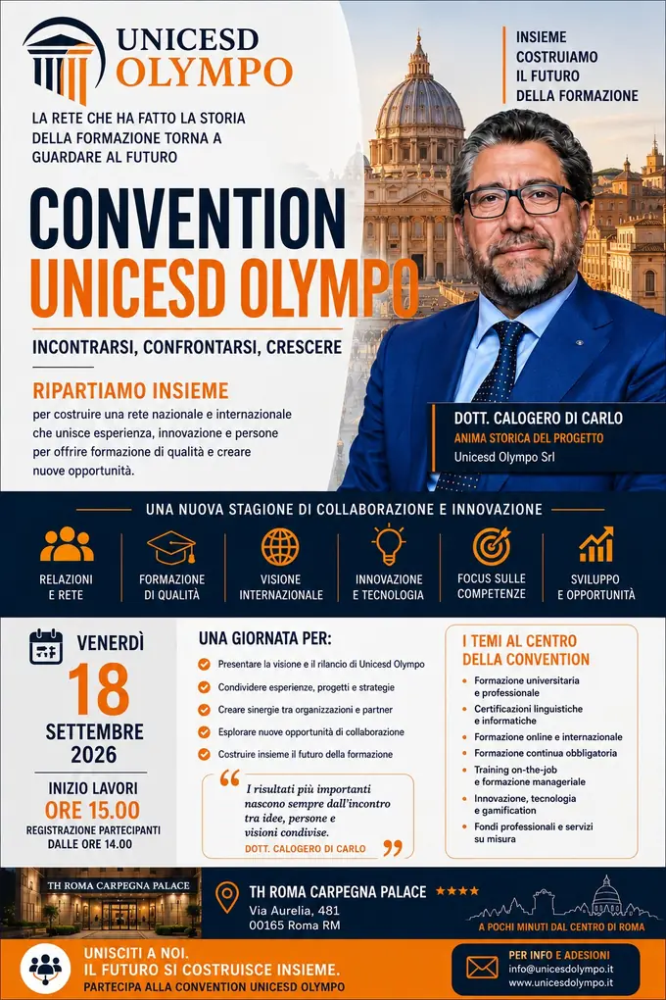
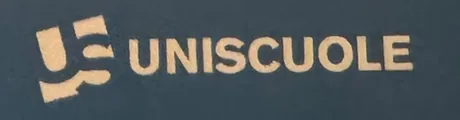
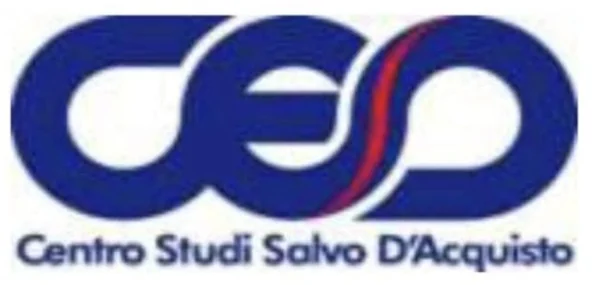

Il futuro dellaformazioneparte da qui.UNICESD Olympo — Centro Studi a Palermo per corsi di laurea, master universitari e certificazioni
Centro Studi accreditato per l'orientamento, il tutoraggio e il coordinamento di percorsi universitari e di alta formazione. Studi dove vuoi, quando vuoi, con un tutor sempre al tuo fianco.
Università onlineJanus – Istituto Superiore per la FormazioneUniversità Popolare MaurizianaOrienta CampusForum Italiano dell'ExportAssolympoCESD – Centro Studi Salvo D'AcquistoA.S.D.P. Pegaso AthleticMemorial Salvo D'AcquistoHashtag MagazineEffettotreLOGOS – Mediazione Linguistica L-12SSML Belluno – FUSPREH – Rome Education HubUniversity for PeaceEuroform – Scuola dei MestieriLuxium SolutionsI.S.E.T. – Industria Sistemi ElettroniciGiurecoformButtanissima Sicilia100 Vetrine in ReteFondazione AstreaCertificazioni linguistiche e informaticheUniscuolePolaris CampusStudy with AthenaEdizioni DuepuntozeroGiurispediaStudio Eremita – AI & Business IntelligenceINNOVASIULP TorinoFondo Nuove Competenze 2026Made in Italy Global Leadership
0Anno di fondazioneIscrizione al Registro Imprese
0Percorsi di studioLauree, master e certificazioni
0Partner in reteAtenei, enti e imprese
0Master Made in ItalyExport & International Business
Agenda
Gli eventi di Calogero Di Carlo
Convention, open day, incontri istituzionali e appuntamenti sportivi delle realtà della rete. Qui trovi il calendario aggiornato, con i prossimi appuntamenti in evidenza.

Prossimo evento
Convention UNICESD Olympo
Incontrarsi, confrontarsi, crescere — Ripartiamo insieme
Una giornata per presentare la visione e il rilancio di UNICESD Olympo, condividere progetti e strategie, creare sinergie tra organizzazioni e partner e costruire insieme il futuro della formazione. Al centro: formazione universitaria e professionale, certificazioni linguistiche e informatiche, formazione online e internazionale, training on‑the‑job, innovazione e gamification, fondi professionali e servizi su misura.
📅
Venerdì 18 settembre 2026Inizio dei lavori ore 16:00
🕑
Registrazione e aperitivodalle ore 15:00
📍
TH Roma Carpegna PalaceVia Aurelia 481, 00165 Roma
Tutte le sedi della rete accolgono studenti e famiglie in presenza, mentre da Roma l'evento viene trasmesso in diretta streaming. Presentazione dei percorsi, delle nuove sedi e delle borse di studio al 100% e al 50%.
Sedi della rete Janus · streaming da Roma
20Set2026
In programma16° Memorial Podistico Salvo D'Acquisto
Con il 9° Criterium Europeo Interforze: dieci chilometri su quattro giri di Via della Libertà, partenza alle 9:30 da Piazza Mordini. Calogero Di Carlo è presidente della manifestazione, organizzata dall'A.S.D.P. Pegaso Athletic.
Palermo · Piazza Mordini – Via della Libertà
08Ago2026
ConclusoFirma del protocollo Made in Italy Global Leadership
Nella Sala degli Specchi di Villa Niscemi la sottoscrizione del protocollo d'intesa che dà vita all'Executive Master in Export, Geopolitics & International Business.
Villa Niscemi, Palermo
31Lug2026
ConclusoJanus Partner Day e Partner Night
Dalle 11:30 alle 15:00, giornata di formazione e allineamento operativo per i poli della rete: linee guida, promozioni e programmazione dell'anno scolastico 2026/27, consegna dei kit ufficiali. La sera il confronto prosegue alla Partner Night.
Sede Janus · Via Castense 8, 00182 Roma
Vuoi ricevere gli inviti ai prossimi appuntamenti? Lascia i tuoi contatti e ti avvisiamo per tempo.
L'offerta formativa di UNICESD Olympo
Tutta la formazione, in un solo Centro Studi
Dal diploma alla laurea, dal master alle certificazioni, fino agli studi all'estero e ai corsi sull'intelligenza artificiale: è UNICESD Olympo a offrirti il percorso, a orientarti nella scelta, a seguirti nell'iscrizione e ad accompagnarti con un tutor fino al traguardo.
60+percorsi di formazione
27corsi di laurea
79indirizzi di laurea
11diplomi di scuola superiore
6master e alta formazione
6percorsi di studio all'estero
⚖
Giurisprudenza
Percorso a ciclo unico per l'accesso alle professioni legali, con approfondimenti di diritto civile, penale e amministrativo.
Lauree triennali, magistrali e a ciclo unico, con tutti gli indirizzi, da scegliere insieme a noi. UNICESD Olympo ti orienta nella scelta, ti segue nell'iscrizione e ti accompagna durante gli studi.
26corsi di laurea
15triennali
10magistrali
79indirizzi
L-33Triennale
Economia
Economia e turismo · 3 anni · 180 CFU
Aziende sanitarie ed economia della salute
Economia e commercio
Psicoeconomia
Scienze bancarie e consulenti finanziari
Start-up d'impresa e modelli di business
Economics and business
L-15Triennale
Scienze del turismo per il management e i beni culturali
Economia e turismo · 3 anni · 180 CFU
Management e turismo culturale
Management dell'ospitalità e del territorio
Global tourism and cultural heritage management
LM-56Magistrale
Scienze dell'economia
Economia e turismo · 2 anni · 120 CFU
Scienze economiche
Green economy e sostenibilità
e-Commerce e digital management
LMG-01Ciclo unico
Giurisprudenza
Giuridico e sociale · 5 anni · 300 CFU
Percorso unico
L-14Triennale
Servizi giuridici
Giuridico e sociale · 3 anni · 180 CFU
Servizi giuridici per l'impresa
Scienze penitenziarie
Criminologia
Consulente del lavoro e giurista d'impresa
Amministratori di condominio
L-36Triennale
Scienze politiche e sociali
Giuridico e sociale · 3 anni · 180 CFU
Politica, società e istituzioni
Politica, economia e Pubblica Amministrazione
L-20Triennale
Scienze della comunicazione
Giuridico e sociale · 3 anni · 180 CFU
Comunicazione istituzionale e d'impresa
Digital marketing
Digital entertainment and gaming
Influencer
L-9Triennale
Ingegneria industriale
Ingegneria · 3 anni · 180 CFU
Chimico
Gestionale
Energetico
Veicoli ibridi ed elettrici
Energy engineering
L-7Triennale
Ingegneria civile e ambientale
Ingegneria · 3 anni · 180 CFU
Civile e ambientale
Paesaggistico
L-8Triennale
Ingegneria informatica e dell'automazione
Ingegneria · 3 anni · 180 CFU
Sistemi di elaborazione e controllo
Droni e sistemi robotici
Intelligenza artificiale e data science
Ingegneria informatica delle app e dei sistemi cloud
Sicurezza informatica
Computational intelligence
LM-33Magistrale
Ingegneria industriale
Ingegneria · 2 anni · 120 CFU
Termomeccanico
Tecnologico gestionale
Progettuale meccanico
Industria 4.0
LM-23Magistrale
Ingegneria civile
Ingegneria · 2 anni · 120 CFU
Strutture e territorio
Gestione, manutenzione e controllo del costruito
Tecnica e gestione del progetto di opere pubbliche
LM-32Magistrale
Ingegneria informatica e dell'automazione
Ingegneria · 2 anni · 120 CFU
Base
Intelligenza artificiale
Robotica
Cybersecurity
L-10Triennale
Letteratura, arte, musica e spettacolo
Lettere, arti e lingue · 3 anni · 180 CFU
Letterario
Artistico, audiovisivo e dello spettacolo
L-3Triennale
Design e discipline della moda
Lettere, arti e lingue · 3 anni · 180 CFU
Percorso unico
L-11Triennale
Lingue e culture europee e del resto del mondo
Lettere, arti e lingue · 3 anni · 180 CFU
Pedagogico-didattico
Tecnico computazionale
Editoriale-multimediale
Comunicazione interculturale
LM-14Magistrale
Letteratura, lingua e cultura italiana
Lettere, arti e lingue · 2 anni · 120 CFU
Promozione culturale
Filologico
LM-37Magistrale
Lingue e letterature moderne e traduzione interculturale
Lettere, arti e lingue · 2 anni · 120 CFU
Lingue e letterature europee
Traduzione e processi interlinguistici
L-19Triennale
Scienze dell'educazione e della formazione
Pedagogia · 3 anni · 180 CFU
Base
Scienze dell'educazione della prima infanzia
LM-85Magistrale
Scienze pedagogiche
Pedagogia · 2 anni · 120 CFU
Pedagogia e scienze umane
Pedagogista della marginalità e della disabilità
E-learning, didattica digitale e media education
L-24Triennale
Scienze e tecniche psicologiche
Psicologia · 3 anni · 180 CFU
Psicologia criminologica
Psicologia applicata ai contesti sociali e clinici
LM-51Magistrale
Psicologia
Psicologia · 2 anni · 120 CFU
Psicologia clinica e dinamica
Psicologia giuridica e criminologia
Psicologia e nuove tecnologie
Psicologia strategica
L-13Triennale
Scienze biologiche
Biologia e nutrizione · 3 anni · 180 CFU
Biosanitario e molecolare
Ambiente e biodiversità
LM-61Magistrale
Scienze della nutrizione umana
Biologia e nutrizione · 2 anni · 120 CFU
Nutrizione molecolare
Chimica, tecnologia e marketing
L-22Triennale
Scienze delle attività motorie e sportive
Scienze motorie · 3 anni · 180 CFU
Scienze delle attività motorie e sportive
Sport and football management
LM-67Magistrale
Scienze dell'esercizio fisico per il benessere e la salute
Scienze motorie · 2 anni · 120 CFU
Attività motoria nella scuola secondaria
Biomeccanica
Palestra del benessere
Il titolo di studio è rilasciato dall'università telematica convenzionata; piani di studio, durate e indirizzi attivi possono variare per anno accademico.
Executive Master in Export, Geopolitics & International Business, in collaborazione con atenei online partner, Orienta Campus e Forum Italiano dell'Export.
Undici indirizzi fra licei, istituti tecnici e professionali, per chi lavora, pratica sport, vive lontano o vuole recuperare gli anni persi. Lezioni sempre disponibili in piattaforma, un tutor personale dall'iscrizione all'esame, un assistente virtuale attivo 24 ore su 24 e, per il quinto anno, lezioni live serali di preparazione alla maturità.
11 indirizziRecupero anniIdoneità e maturitàTutor personale
LICEOScientificoMetodo di studio autonomo e critico, metodo scientifico e applicazioni matematiche, teorie filosofiche e storiche del progresso tecnologico.
LICEOScientifico SportivoMetodi sportivi applicati a diversi ambiti, analisi critica dei fenomeni sportivi e competenze socio‑economiche del settore.
LICEOScienze ApplicatePreparazione scientifica costruita sul laboratorio, pensiero critico, ricerca sperimentale e strumenti informatici per l'analisi dei dati.
LICEOClassicoCultura greco‑latina, capacità linguistiche e analitiche, argomentazione e approccio interdisciplinare fra materie umanistiche e scientifiche.
LICEOLinguisticoLivello B2 in due lingue europee e B1 in una terza, cultura e letteratura dei paesi studiati, confronto interculturale.
LICEOScienze UmanePedagogia, psicologia, antropologia e sociologia per leggere i fenomeni educativi, familiari, interculturali e lavorativi.
LICEOEconomico SocialeMercati, diritto ed economia, sociologia e antropologia per descrivere la società globale, due lingue straniere.
TECNICOIst. Tecnico Tecnologico InformaticoSistemi informatici, tecnologie web, reti e comunicazioni: analisi, progettazione, installazione e gestione di sistemi e basi di dati.
TECNICOAFM — Amministrazione, Finanza e MarketingDocumenti finanziari e amministrativi, mercati, marketing e comunicazione, relazioni aziendali internazionali. L'indirizzo più scelto: 22,89%.
PROFESSIONALESocio SanitarioBisogni socio‑sanitari e inclusione, piani di intervento, gestione di imprese e reti di servizio, assistenza e animazione sociale.
TECNICOTurismoProgettazione e gestione di servizi turistici, competenze linguistiche, patrimonio culturale del territorio e strumenti digitali di promozione.
Medicina, odontoiatria, infermieristica, fisioterapia e altri percorsi in atenei europei, spesso senza test d'ingresso e con la possibilità di rientrare in Italia. Ti seguiamo dalla scelta dell'ateneo alla documentazione, fino al riconoscimento del titolo. Rette annuali indicate dagli atenei per l'anno accademico 2026/27.
🩺
Medicina
Romania. Bucarest, Università T. Maiorescu: test di ammissione a settembre, in inglese e in presenza, retta 11.000 €/anno divisibile in tre rate. Craiova, università statale: senza test, retta 8.500 €/anno. Spagna. Madrid, Valencia, Malaga, Alicante e Gran Canaria: senza test, retta da 15.000 a 20.000 €/anno in base alla sede.
6 anniInglese · spagnoloRientro dal 2° anno
🦷
Odontoiatria
Macedonia: 5 anni, frequenza programmata, nessun test d'ingresso, lingua inglese, tirocinio in Italia e agevolazioni per chi ha il diploma di odontotecnico. Spagna: 5 anni nelle migliori università private, senza test, in inglese. Romania: 6 anni in lingua inglese, con rette che nelle private vanno dagli 8.000 agli 11.000 €/anno.
5–6 anniSenza testTirocinio in Italia
🪥
Igiene Dentale
Corso di formazione professionale presso l'Università Europea di Madrid: 2 anni, 2000 ore, completamente online, senza costi aggiuntivi, con tutor per tutto il percorso e corso opzionale di spagnolo incluso. Tirocinio facoltativo in strutture italiane. Titolo ufficiale rilasciato dal Ministero della Salute spagnolo, valido in tutta Europa e in Italia, con possibilità di conseguire la Certificazione RX per le ortopantomografie. Agevolazioni per diploma di odontotecnico e per gli assistenti alla poltrona (ASO).
2 anni · 2000 ore100% onlineTitolo ministeriale
🏥
Infermieristica
4 anni, 240 CFU, in inglese e spagnolo, con trasferimento sul posto: 7.000 €/anno in Spagna (inglese, spagnolo o francese), 6.500 €/anno in Romania (inglese), rateizzabili. Per chi lavora esiste la formula in 3 anni in Romania a 5.700 €/anno: tirocinio in Italia presso strutture convenzionate per due mesi l'anno, due o tre viaggi brevi in Romania per la parte teorica e burocratica, e riconoscimento di alcuni esami a chi proviene dal corso OSS.
3–4 anniFormula lavoratoriCrediti da OSS
🧍
Fisioterapia
Spagna — Università Europea di Madrid, sede di Valencia: 4 anni, 9.980 €/anno, lezioni il venerdì pomeriggio e il sabato, teoria online in modalità HyFlex e pratica in presenza anche in Italia, tirocini clinici in ospedali italiani o spagnoli, simulazione in realtà virtuale; chi viene da Scienze Motorie può iscriversi direttamente al 2° anno. Romania — Università di Medicina e Farmacia di Craiova: 3 anni, 6.500 €/anno, frequenza concordabile con il lavoro. Svizzera — Campus Ludes, Lugano: 4 anni, 13.000 €/anno in due semestri, interamente in italiano, titolo dell'Università Semmelweis.
3–4 anniCompatibile col lavoro
🎓
Gli altri percorsi
Economia, ingegneria, architettura e marketing in Romania: 3.000–5.000 €/anno, in inglese. Ucraina, percorsi abbreviati e specializzazioni mediche: area medica completa (5 anni e 8 mesi) o quadriennale e specializzazioni a 10.000 €/anno; lauree triennali di area economica e tecnica 30.000 €; master abilitanti e lauree magistrali 20.000 €; titoli con registrazione NARIC e apostille, tutti in inglese, attesa massima tre mesi. E il percorso abilitante per agente immobiliare, con esame finale e possibilità di riconoscimento in Italia: 3.500 € complessivi.
Quattro percorsi per usare l'intelligenza artificiale in modo consapevole e mettere in regola imprese, enti e professionisti con il regolamento europeo.
🎓
AI Act Literacy
Primo livello di adeguamento e di uso consapevole dell'IA: struttura del regolamento, classificazione del rischio, pratiche vietate, trasparenza e controllo umano, IA generativa, protezione dei dati e sicurezza delle informazioni. Al termine si riconoscono i rischi e si definiscono le prime regole organizzative interne.
10 lezioni70 minutiAziende, enti e PA
⚖
Masterclass AI Act
Percorso operativo per consulenti: quadro normativo, ruoli di provider e deployer, pratiche vietate, sistemi ad alto rischio e modelli per finalità generali, registro e governance, contratti, sanzioni e ispezioni. Restituisce un metodo di audit e una roadmap commerciale immediatamente applicabile.
6 lezioni42 minutiConsulenti
🛡
AI Act Governance & Compliance
Secondo livello di adeguamento: mappatura e classificazione dei sistemi, ruoli e responsabilità, alto rischio, supervisione umana, dati e tracciabilità, incidenti, fornitori, registri e procedure. Per imprenditori, dirigenti, HR, compliance, DPO, cybersecurity, qualità e risk management.
In arrivo2° livello
☮
Diritti Umani
Principi, fonti e strumenti internazionali di tutela: Dichiarazione Universale, diritti civili, politici, economici e sociali, ONU e CEDU, uguaglianza, privacy, migrazioni, conflitti, nuove tecnologie e intelligenza artificiale. Un percorso completo sui sistemi universali e regionali di tutela.
Un modello formativo costruito su chi lavora, ha una famiglia o vive lontano dai grandi centri universitari.
📶
Didattica 100% online, esami in sede
Videolezioni sempre disponibili, materiali scaricabili, aula virtuale e verifiche intermedie. Gli esami si sostengono nelle sedi convenzionate, con calendario flessibile durante tutto l'anno accademico.
🤝
Tutor personale
Dall'iscrizione alla laurea hai un referente unico che costruisce con te il piano di studi, ti ricorda le scadenze e ti prepara agli esami.
1:1Sempre disponibile
♿
Riconoscimento CFU
Valutiamo gratuitamente esperienze e crediti pregressi per abbreviare il percorso.
💳
Rate su misura
Piani di pagamento personalizzati, agevolazioni e convenzioni con enti e aziende.
💼
Placement
Tirocini, orientamento al lavoro e rete di imprese partner sul territorio.
🌏
Presenza capillare
Estesa in tutta Italia con poli didattici e servizi di prossimità. E oltre i confini, con la sede di Lisbona.
Scopri UNICESD Olympo
Tutto il Centro Studi, a portata di clic
Chi siamo, gli eventi, i servizi, i progetti e le sedi: ogni tema ha la sua pagina.
Una rete che tiene insieme formazione, sport e impresa
Gli enti con cui UNICESD Olympo collabora: atenei, istituti, associazioni di categoria, testate di settore e realtà sportive. Sono le organizzazioni in cui il fondatore Calogero Di Carlo ricopre un ruolo o con cui esistono rapporti di collaborazione.

Network dell'istruzione
Uniscuole
Network educativo attivo dal 1976, con sede centrale a Capo d'Orlando (Messina) e presenza in tutta Italia. Diplomi per tutti gli indirizzi con recupero anni, oltre 130 corsi di laurea con gli atenei telematici, TFA sostegno, 24 CFU, CLIL, certificazioni linguistiche ed EIPASS, dattilografia e corsi digitali. Un interlocutore con cui condividiamo il metodo: orientamento prima dell'iscrizione, tutoraggio durante, sedi d'esame vicine allo studente.
La segreteria provinciale torinese del sindacato di Polizia ha aperto agli iscritti e ai loro familiari una convenzione dedicata: «Investi sul tuo futuro e su quello della tua famiglia». Un catalogo interdisciplinare completo — giuridico, economico, umanistico, sanitario, psicologico, ingegneristico, politico-sociale e scienze motorie — con lauree triennali e magistrali, master di I e II livello e corsi di perfezionamento 100% online, pensati per conciliare turni di servizio e vita privata, a rette agevolate.
Il partner tecnico del progetto AI di UNICESD Olympo: matematiche applicate e intelligenza artificiale integrata come motore del business, con dodici aree di servizio che vanno dagli agenti AI e l'automazione alla data intelligence, dal GDPR all'AI Act, dall'europrogettazione ai diritti umani. Da qui nascono i percorsi formativi sull'IA che trovi nella sezione dedicata.
Acceleratore deep-tech europeo e incubatore certificato dal Governo italiano dal 2015, fondato a Roma nel 1993 e oggi ospitato al Tecnopolo Tiburtino, con uffici in Europa, Regno Unito e Stati Uniti. Accompagna startup, imprese e centri di ricerca dallo sviluppo tecnologico all'accesso ai finanziamenti, alla strategia di proprietà intellettuale e all'internazionalizzazione: il ponte naturale fra la nostra formazione e i programmi europei di innovazione.
La misura nazionale che rimborsa alle imprese il costo del personale per le ore passate in formazione, quando l'azienda deve adeguarsi alle transizioni digitale ed ecologica. Con l'Università Telematica degli Studi IUL seguiamo le imprese dalla rilevazione del fabbisogno alla rendicontazione finale.
Testata siciliana d'inchiesta e commento politico. Ha dedicato a Calogero Di Carlo e al modello dell'università telematica due articoli: «Calogero, dalla Sicilia all'impero di Pegaso» (8 giugno 2018), il ritratto del coordinatore delle sedi nazionali Pegaso — «la nostra università telematica consente a tutti, ma a tutti davvero, di poter conseguire un titolo di studio» — e «Università, perché il pubblico perde» (5 luglio 2018), l'intervista sul confronto fra atenei pubblici e telematici, sui poli decentrati in difficoltà e sull'apertura di nuove sedi in Sicilia.
Industria Sistemi Elettronici per Telecomunicazioni, con stabilimento a Maddaloni (CE) e divisione energia fondata nel 1996. Da oltre vent'anni electronic manufacturing service: progettazione, produzione e collaudo di schede e sistemi elettronici con tre linee SMT e due THT (50.000 componenti/ora), in circuit test, test funzionali e conformal coating. Sei settori: EMS, ferroviario, medicale, energia, smart city & mobility, smart road.
Dal 2005 nel segnalamento ferroviario — SCMT, ERTMS/ETCS, normative CENELEC — con lavori su Metro 5 di Milano, linee B e C di Roma, Metrobrescia, Linea 1 di Napoli e alta velocità italiana, e all'estero su Riyadh, Abu Dhabi, Tunisi, Perth, Xi'an, Ankara, Lima, Copenaghen, Aarhus, Parigi e Stoccolma. Produce inoltre i laser medicali a diodi 808 nm e impianti fotovoltaici con monitoraggio Sunflower Web. Certificata ISO 9001:2015 e OHSAS 18001:2007.
Giurecoform — Centro di Formazione Giuridica ed Economica
Centro di formazione dedicato all'aggiornamento dei professionisti nelle materie giuridiche ed economiche: percorsi per avvocati, commercialisti, consulenti del lavoro e operatori della pubblica amministrazione. Fa parte del gruppo, dove presidia anche il ramo immobiliare: insieme a I.S.E.T. e ad Agro Bio Kalos è una delle tre imprese che affiancano la formazione sul fronte produttivo.
Società che fa parte del gruppo facente capo a Calogero Di Carlo, accanto alle realtà formative della rete.
Gruppo OlympoSocietà collegata
Formazione professionale
Euroform — Scuola dei Mestieri
Ente no‑profit nato nel 1996 per promuovere le opportunità di sviluppo locale offerte dall'Unione Europea, accreditato presso la Regione Siciliana – Assessorato dell'Istruzione e della Formazione Professionale. Opera su tre fronti: formazione professionale, consulenza a enti pubblici e privati, internazionalizzazione della cultura e dell'economia siciliana, con i dipartimenti Scuola Professionale dei Mestieri e Formazione Adulti.
La Scuola dei Mestieri eroga gratuitamente i percorsi di Istruzione e Formazione Professionale (IeFP) rivolti ai minori in uscita dalla scuola media o in dispersione scolastica: Qualifica Professionale in tre anni e Diploma Tecnico al quarto, titoli riconosciuti in quattro lingue e validi in ambito comunitario. Dieci figure professionali — benessere, produzioni alimentari, meccatronica, abbigliamento, informatica, turismo, ristorazione, impianti elettrici, saldatura e termoidraulica — con sedi in tutte le province siciliane.
Agro Bio Kalos — dal greco kalòs, bello e buono — coltiva 34 ettari di oliveto incastonati fra le colline di Collesano, sulle propaggini orientali del Parco delle Madonie, esclusivamente con metodi biologici certificati, senza pesticidi né sostanze chimiche di sintesi.
L'olio nasce dall'assemblaggio di due cultivar simbolo dell'olivicoltura siciliana, la Biancolilla e la Nocellara, con molitura a freddo sotto i 27 °C per conservare intatte le proprietà nutritive e organolettiche. Un extravergine di categoria superiore, ottenuto dalle olive unicamente mediante procedimenti naturali: il presidio agricolo della rete e un pezzo di Made in Sicily.
Collesano · Campofelice di Roccella (PA)34 ettari · biologico
100 VETR
Progetto
100 Vetrine in Rete
Progetto di sviluppo di una rete di centri multiservizi in franchising dedicati a orientamento, formazione universitaria, tutoraggio e ricerca del lavoro. Si rivolge in particolare a giovani under 35 e imprenditoria femminile che vogliono aprire un presidio formativo nel proprio territorio, con formazione iniziale, affiancamento nella fase di avvio e accesso alla rete di convenzioni e accreditamenti.
Network universitario con Laurea Triennale in Mediazione Linguistica (classe L‑12): sette indirizzi — Sport Management, Criminological Studies and Cybersecurity, Comunicazione e Nuovi Media, Fashion and Luxury Management, International Relations, Turismo e Hospitality, Music Management — dieci lingue e quattro sedi: LIMEC SSML a Milano, Uni International SSML a Varese, SSML Gregorio VII a Roma e la SSML di Ancona.
Scuola Superiore per Mediatori Linguistici del circuito FUSP – Fondazione Unicampus San Pellegrino, con Laurea Triennale in Mediazione Linguistica (classe L‑12) riconosciuta dal Ministero dell'Università. Quattro indirizzi — lingue per il business e il commercio, intelligenza artificiale e social media marketing, geopolitica e cooperazione internazionale, gestione dei grandi eventi e degli eventi sportivi — con otto lingue straniere e docenti madrelingua.
Hub formativo dedicato all'istruzione internazionale e all'occupabilità: formazione professionale, accademica e universitaria erogata in presenza e a distanza in quattro lingue — italiano, inglese, francese e arabo. Il progetto si sviluppa tra Italia, Malta, Albania e Tunisia, con laboratori su droni, stampa 3D, e‑learning, e‑commerce e intelligenza artificiale.
Ateneo internazionale istituito nel 1980 dall'Assemblea Generale delle Nazioni Unite (risoluzione 35/55), con sede principale a Ciudad Colón, in Costa Rica, e presidi a Ginevra e all'Aia. Rilascia master e dottorati in studi per la pace, risoluzione dei conflitti, diritto internazionale e studi ambientali. Il Segretario Generale dell'ONU ne è presidente onorario. In Italia il riferimento è la sede di Roma, Palazzo Falletti — via Panisperna 207.
Centri per il conseguimento delle certificazioni di inglese, spagnolo e francese, dal livello base ai livelli avanzati del Quadro Comune Europeo. Titoli spendibili nelle graduatorie del comparto scuola, nei concorsi pubblici e come crediti nei percorsi universitari.
Inglese · Spagnolo · FranceseQCER
💻
Organismi accreditati
Certificazioni informatiche
Organismi specializzati nel rilascio delle certificazioni informatiche: alfabetizzazione digitale e pacchetto office, sicurezza informatica e privacy, web editing, coding e pensiero computazionale.
Competenze digitaliGraduatorie e concorsi
🩺
Area sanitaria
Percorsi per l'area sanitaria
Preparazione e accesso ai corsi dell'area sanitaria in collaborazione con UniCamillus, Università Medica Internazionale di Roma, e con il polo di Novarello: orientamento, preparazione ai test di ammissione e accompagnamento all'immatricolazione.
UniCamillus · NovarelloTest di ammissione
🇳🇪
Medicina all'estero
Medicina in Spagna e Romania
Programmi di orientamento verso i corsi di laurea in Medicina in Spagna e Romania: scelta dell'ateneo, procedure di ammissione, pratiche consolari e di iscrizione, assistenza nella fase di trasferimento e durante il percorso.
Spagna · RomaniaOrientamento e pratiche
🏫
Scuole internazionali
Hub education — scuole internazionali
Poli scolastici internazionali concepiti come motori strategici per attrarre talenti globali: programmi in più lingue, docenti e imprenditori in cattedra, collegamento diretto tra percorso di studi e mercato del lavoro.
Talenti globaliMultilingue
FOND ASTREA
Concorsi e alta formazione
Fondazione Astrea
Fondazione con sede a Roma presieduta dall'avvocato Manlio Caruso, specializzata nella preparazione ai concorsi delle Forze armate e di polizia, con dipartimenti dedicati a informatica, lingue, preparazione universitaria, intelligence e relazioni internazionali. Caruso è stato nominato Rettore dell'Università Mauriziana, di cui Calogero Di Carlo è Segretario Generale.
Scuola online per il diploma di maturità: dieci indirizzi tra licei e istituti tecnici, piattaforma e‑learning, tutor personale e nessun obbligo di frequenza. La rete dei poli remoti Janus è stata lanciata sul territorio con l'Open Day nazionale del 31 luglio. Sede di Roma: Via Castense 8, 00182 Roma.
16° edizione e 9° Criterium Europeo Interforze: domenica 20 settembre 2026 a Palermo, dieci chilometri su quattro giri di Via della Libertà con partenza da Piazza Mordini. Sport, memoria e inclusione sotto il motto «Tutti insieme sulla strada della Pace».
Associazione sportiva dilettantistica accreditata al CONI, fondata nel 2018 e attiva nell'atletica leggera e nel triathlon con risultati regionali, nazionali e internazionali. È l'ente che organizza il Memorial Salvo D'Acquisto.
Via Trabia 2, Palermodal 2018

Fondatore
CESD — Centro Studi Salvo D'Acquisto
Associazione senza fini di lucro nata nel 2008 per tenere viva la memoria del Beato Salvo D'Acquisto e sostenerne la causa di santificazione. Custodisce un museo di cimeli e oggetti storici dell'Arma dei Carabinieri in una sede del centro di Palermo confiscata alla mafia e promuove attività sociali, sportive e di beneficenza. Già nel 2008 nasce a Comiso (Ragusa) il primo circolo del CESD dopo Palermo.
Via Principe di Granatelli 35, Palermo
Segretario Generale
Università Popolare Mauriziana
Associazione con sede a Roma, affiliata alla Confederazione Nazionale delle Università Popolari Italiane. Con decreto presidenziale del 21 luglio 2026 Calogero Di Carlo è stato nominato Segretario Generale nel nuovo Consiglio di Amministrazione; è inoltre Pro‑rettore per l'Italia dell'Accademia Internazionale Mauriziana.
RomaAffiliata CNUPI
CERS
Fondatore
CERS
Progetto di cui Calogero Di Carlo è fondatore. La scheda istituzionale ne richiama il profilo: competenze di comando e gestione organizzativa, la cattedra di Diritto Ecclesiastico tenuta dal 2009 al 2024 e l'esperienza imprenditoriale nella formazione e nelle certificazioni.
Associazione di categoria senza fini di lucro che rappresenta gli enti di formazione professionale e universitaria, fondata nel 2018. Il 6 novembre 2019 ha firmato a Roma un patto di collaborazione con Cisal e Assoimpresa: contratti di lavoro per commercio, turismo e servizi e servizi condivisi di fiscalità, assistenza e formazione per le imprese aderenti.
Il magazine della formazione e del lavoro ha dedicato la copertina al rilancio di UNICESD Olympo, definita «la rete che ha fatto la storia della formazione» che «torna a guardare al futuro». In copertina il dott. Calogero Di Carlo e la mappa dei servizi della rete: fondi interprofessionali, Fondimpresa e Fonarcom, formazione continua e obbligatoria, e‑learning e gamification, training on‑the‑job e catalogo corsi.
Periodico mensile autonomo d'informazione che segue formazione, politica, economia e turismo. Calogero Di Carlo ne è fondatore e direttore responsabile dal 2009; redazione a Roma, in via Panisperna 207, Palazzo Falletti. Sedici annate e 164 numeri di archivio, e una ripartenza già in programma.
Atenei telematici e residenziali partner per l'erogazione dei percorsi universitari e dei master di I livello. I titoli di studio sono rilasciati dall'ateneo; UNICESD Olympo svolge attività di orientamento, tutoraggio e supporto amministrativo.
Ateneo telematicoPartner accademico
OC
Rete di orientamento
Orienta Campus
Rete nazionale di orientamento e servizi agli studenti, con cui condividiamo il lavoro di accompagnamento alla scelta del percorso e il presidio territoriale.
Rete nazionaleOrientamento
FIE
Partner Made in Italy
Forum Italiano dell'Export
Organizzazione di riferimento per l'internazionalizzazione delle imprese italiane e partner del Master «Made in Italy Global Leadership» firmato a Villa Niscemi.
InternazionalizzazioneMaster Made in Italy
Campus formativo
Polaris Campus
Ecosistema formativo che tiene insieme istruzione, innovazione e valori, con sede a Roma. Nasce in partnership strategica con Janus — Istituto Superiore per la Formazione e con il British Institutes Examination Board, e affianca ai percorsi accademici una preparazione alla Maturità costruita su misura. Nel suo network figurano e‑Campus, Unitelma Sapienza, Sapienza Università di Roma, IRSAF education, Orienta Campus e le certificazioni EIPASS.
Agenzia specializzata nell'accesso alle università europee. Accompagna gli studenti verso Medicina, Odontoiatria, Igiene Dentale, Infermieristica e Fisioterapia in Romania, Spagna e Macedonia, oltre ai percorsi economici, ingegneristici e ai master. Segue per intero la parte burocratica: documenti, apostille, dichiarazione di valore, iscrizione, visto e riconoscimento del titolo.
Due progetti dello stesso ambito, di cui Calogero Di Carlo fa parte. Edizioni Duepuntozero è una casa editrice di editoria e formazione: volumi e riviste su locazioni, responsabilità civile e penale, sanità e management, crimini informatici e cyberbullismo, con aggiornamenti normativi e app dedicata. Giurispedia è la piattaforma giuridica digitale che affianca all'enciclopedia — sentenze, formulari e approfondimenti di civile, penale e amministrativo‑tributario — assistenti di intelligenza artificiale specializzati e uno studio virtuale addestrato sugli atti del professionista. Il comitato tecnico scientifico ha la direzione onoraria del prof. Antonio Felice Uricchio e la direzione operativa dell'avv. Roberto Francesco Iannone.
Nel rione Monti, a pochi passi dai Fori, Palazzo Falletti è l'indirizzo romano della rete. Non è un recapito di comodo: è il luogo in cui si incontrano le realtà che lavorano fuori dalla Sicilia, dove si tengono riunioni, presentazioni e incontri istituzionali, e dove hanno domicilio due soggetti diversi per natura ma legati dallo stesso disegno.
C'è la sede italiana della University for Peace — UPEACE, l'ateneo istituito dall'Assemblea Generale delle Nazioni Unite, e c'è la redazione di Effettotre, il periodico fondato e diretto da Calogero Di Carlo dal 2009.
Accanto alle partnership accademiche esistono convenzioni rivolte a categorie professionali intere: sindacati, ordini, associazioni e aziende che aprono ai propri iscritti e ai loro familiari tariffe dedicate e percorsi costruiti sui turni di lavoro.
È il caso di SIULP Torino, la segreteria provinciale del sindacato di Polizia, con l'iniziativa «Investi sul tuo futuro e su quello della tua famiglia»: grazie alle convenzioni con i primari atenei telematici e digitali italiani, gli iscritti accedono a un catalogo interdisciplinare completo — giuridico, economico, umanistico, sanitario, psicologico, ingegneristico, politico-sociale e scienze motorie — con lauree triennali e magistrali, master di I e II livello, corsi di perfezionamento e formazione, tutto 100% online e a rette agevolate estese ai familiari.
Non serve scegliere fra lavoro, famiglia e studio: è esattamente il principio su cui è nata UNICESD Olympo. Se rappresenti un ente, un ordine professionale o un'azienda, possiamo costruire una convenzione dedicata.
Lo stesso discorso vale per il settore pubblico. La UIPA — Università Internazionale delle Pubbliche Amministrazioni, con sede nella Repubblica di San Marino, è nata nel 2024 per la formazione di funzionari e amministratori pubblici e dei giovani che vogliono lavorare nel settore pubblico: un corso di laurea triennale in Scienze Politiche, Giuridiche e Strategie Internazionali, master di I e II livello su amministrazione digitale, contabilità pubblica, contratti pubblici, diritto sanitario, gestione del personale e turismo locale, e un percorso in Management Sportivo. È l'interlocutore naturale per comuni, enti e amministrazioni che vogliono una convenzione costruita sui propri dipendenti.
Nota. Le realtà elencate sono enti, associazioni e società distinte da UNICESD OLYMPO SRL. La loro presenza in questa pagina indica i ruoli ricoperti dal fondatore o i rapporti di collaborazione in essere, non una partecipazione societaria né una responsabilità reciproca. I titoli di studio universitari sono rilasciati esclusivamente dagli atenei accreditati.
Sport e memoria · dal 2008
Centro Studi Salvo D'Acquisto
Via Principe di Granatelli 35 · 90139 Palermo
Le attività del Centro Studi in immagini: gli incontri e le conferenze nella sala museo, fra uniformi storiche e cimeli dell'Arma dei Carabinieri; la consegna del dipinto dedicato al sacrificio di Salvo D'Acquisto; gli stand della memoria e le iniziative sportive e sociali accanto all'Arma e alle associazioni del territorio. Nel 2008, lo stesso anno della fondazione, nasce a Comiso (Ragusa) il primo circolo del CESD fuori da Palermo.
I video
Un incontro nella sala museo del Centro Studi 0:50Proiezione di immagini storiche e conferenza davanti al pubblico 1:21
Le foto
Domande frequenti
Le risposte che cerchi
UNICESD Olympo è un Centro Studi: si occupa di orientamento, tutoraggio, coordinamento didattico e organizzazione delle attività sul territorio. Il titolo di studio è rilasciato dall'ateneo con cui viene attivato il percorso, secondo le proprie procedure e il proprio ordinamento.
Sì. La didattica è interamente online e asincrona: puoi seguire le lezioni quando preferisci, dal computer o dallo smartphone. Gli appelli d'esame sono distribuiti durante tutto l'anno accademico.
Invii il tuo percorso di studi e professionale, e un tutor effettua una valutazione preliminare gratuita, in genere entro 48 ore. La delibera definitiva dei CFU riconosciuti spetta all'ateneo che eroga il corso.
I costi variano in base al percorso scelto e ai crediti riconosciuti. Sono previsti piani di rateizzazione personalizzati e convenzioni con enti e aziende. Ti forniamo un preventivo dettagliato durante il colloquio di orientamento.
Presso le sedi d'esame convenzionate con l'ateneo di riferimento. La sede di Palermo è il punto di riferimento principale per la Sicilia occidentale; ti indichiamo la sede più vicina al momento dell'iscrizione.
È un Master universitario di I livello, quindi richiede il possesso di una laurea triennale o titolo equipollente. È pensato in modalità executive per professionisti, imprenditori e manager che operano o vogliono operare sui mercati internazionali.
Iscrizione e orientamento
Lascia i tuoi recapiti, ti richiamiamo noi
Compila il modulo: un orientatore ti contatta entro 24 ore lavorative per un colloquio gratuito e senza impegno.
Come funziona
Tre passi verso il tuo titolo
Nessun costo, nessun vincolo. Solo informazioni chiare.
1. Compili il modulo Bastano nome, contatto e area di interesse.
2. Ti chiamiamo Colloquio gratuito con un orientatore dedicato.
3. Ricevi il piano Percorso, CFU riconoscibili, costi e rate.
📅 Venerdì 18 settembre 2026🕑 Lavori ore 16:00 · reg. dalle 15:00📍 TH Roma Carpegna Palace — Roma
Una giornata per presentare il rilancio di UNICESD Olympo, creare sinergie tra organizzazioni e partner e costruire insieme il futuro della formazione. Lascia i tuoi dati e ti inviamo il programma completo e le modalità di adesione.